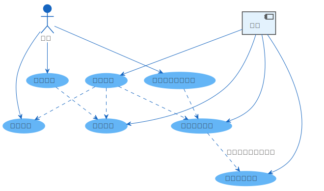

吾立方色板服务系统 文档
¶
本系统用于统一收集媒体文件并集中查看和使用。
用途：
快捷镜头检查，保证临近镜头色调统一。
实时更新的网络访问只读媒体库。
自动多尺寸转码的媒体文件缓存。

术语表
收集模式
CGTeamwork
文件夹
数据模型
收藏
文件
展示
转码
图片
视频
文件存储
目录结构
路径处理
自动清理
文件监控
归档打包
路径参数
数据库
键
(0) 元数据
(1) 序列
(2) 未使用
(3) 收集
(4) 收集来源
(5) 展示
(6) 展示摘要
(7) 文件
(8) 展示文件
(9) 过期的展示
(10) GraphQL 持久查询
(11) 收藏标签
HTTP 路由
GraphQL API
实时订阅
编辑器
持久查询
环境变量
csheet
色板服务
导航
内容:
网页端文档
服务端文档
术语表
收集模式
数据模型
转码
文件存储
文件监控
归档打包
数据库
HTTP 路由
GraphQL API
环境变量
Related Topics
Documentation overview
Previous:
从文件夹收集
Next:
术语表
快速搜索